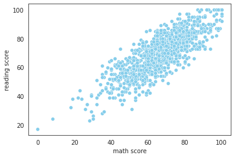
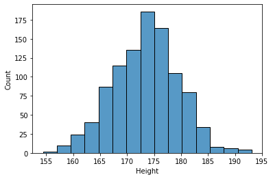
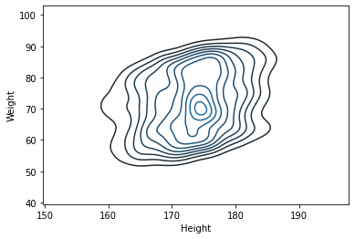
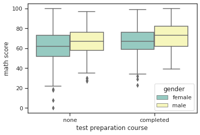

Seaborn
Table of contents
*Seaborn: Python data visualization library based on matplotlib
기본 그래프
Bar Plot, Count Plot
import pandas as pd
import seaborn as sns # import해야 사용 가능; 보통 sns로 줄여서 import
exam_df = pd.read_csv('data/exam.csv') ## 데이터 출처: codeit
exam_df.head()
| gender | race/ethnicity | parental level of education | lunch | test preparation course | math score | reading score | writing score | |
|---|---|---|---|---|---|---|---|---|
| 0 | female | group B | bachelor’s degree | standard | none | 72 | 72 | 74 |
| 1 | female | group C | some college | standard | completed | 69 | 90 | 88 |
| 2 | female | group B | master’s degree | standard | none | 90 | 95 | 93 |
| 3 | male | group A | associate’s degree | free/reduced | none | 47 | 57 | 44 |
| 4 | male | group C | some college | standard | none | 76 | 78 | 75 |
- barplot
sns.barplot(data=exam_df, x="race/ethnicity", y="math score", palette='Blues_d'); # ci=95가 default (ci: Confidence Interval. 신뢰구간)- barplot의 기본 estimator는 np.mean (평균값). 별도로 설정해주지 않으면 default로 각 카테고리의 평균값을 시각화해준다
- estimator는 np.sum, np.count 등으로 다양하게 변경 가능
+) hue 옵션 지정:
sns.barplot(data=exam_df, x="race/ethnicity", y="math score", hue='gender', palette='Set3'); - countplot: y값에는 자동으로 count가 들어가는 bar plot
# 각 race/ethnicity 그룹에 속한 학생 수를 비교 sns.countplot(data=exam_df, x="race/ethnicity", color='skyblue');
Line Plot
import pandas as pd
import seaborn as sns
flights_df = sns.load_dataset("flights")
flights_df.head()
| year | month | passengers | |
|---|---|---|---|
| 0 | 1949 | Jan | 112 |
| 1 | 1949 | Feb | 118 |
| 2 | 1949 | Mar | 132 |
| 3 | 1949 | Apr | 129 |
| 4 | 1949 | May | 121 |
- 연도별 월평균 승객수 추이
sns.lineplot(data=flights_df, x='year', y='passengers', color='skyblue'); # 평균값을 line으로 그려주고, 95% confidence interval을 함께 표시 -
연도별 총 승객수 추이
flights_groupby = flights_df.groupby('year')[['passengers']].sum().reset_index() sns.lineplot(data=flights_groupby, x='year', y='passengers', color='skyblue');+) 아예 estimator=’sum’으로 설정해서 시각화하는 것도 가능
# 연도별 총 승객수 추이 (groupby를 거쳐서 그리는 것과 동일한 형태로 시각화 가능) sns.lineplot(data=flights_df, x='year', y='passengers', color='skyblue', estimator='sum', ci=None);- estimator는 ‘sum’, ‘min’, ‘count’ 등 다양하게 설정 가능
-
연도별, 월별 승객수 추이
sns.lineplot(data=flights_df, x='year', y='passengers', hue='month', palette='pastel');+) 아예 pivot된 데이터를 통째로 넣어서 그리는 것도 가능:
flights_groupby2 = flights_df.pivot('year', 'month', 'passengers') sns.lineplot(data=flights_groupby2, palette='pastel');
Scatter Plot
sns.scatterplot(data=exam_df, x='math score', y='reading score', color='skyblue');

+) hue, style 등의 옵션으로 구분해서 시각화:
import matplotlib.pyplot as plt
plt.figure(figsize=(10, 6))
sns.scatterplot(data=exam_df, x='math score', y='reading score', hue='gender', style='race/ethnicity', palette='Blues_d');
# +) size='lunch' 이런 식으로 점의 size에 따른 구분도 추가 가능
KDE Plot
: 대체로 세상에서 일어나는 대부분의 일들은 비슷한 확률밀도함수(PDF)의 생김새를 갖는다.
그런데, 우리는 무한개의 데이터를 구할 수 없기에,
우리가 구한 데이터로 그래프를 그려보면 매끄러운 확률밀도함수의 모양이 나오지 않는다.
→ 이를 해결하는 것이 KDE(Kernel Density Estimation).
KDE를 사용하면 우리가 구한 데이터를 기반으로 어느 정도 추측을 해서, 실제 분포에 가깝게 매끄러운 그래프를 그려준다.
+) PDF: Probability Density Function (확률밀도함수)
- PDF 아래의 모든 면적을 더하면 1이다. (100%)
- PDF를 활용해서 값들이 어떻게 분포되어 있는지 나타낼 수 있다
- 특정 구간의 면적이 곧 값이 그 구간에 속할 확률이다
- 특정 ‘점’의 확률을 무조건 0이다. (면적이 0이므로)
기본 KDE Plot
body_df = pd.read_csv('data/body.csv') ## 데이터 출처: codeit
body_df.head()
| Number | Height | Weight | |
|---|---|---|---|
| 0 | 1 | 176 | 85.2 |
| 1 | 2 | 175.3 | 67.7 |
| 2 | 3 | 168.6 | 75.2 |
| 3 | 4 | 168.1 | 67.1 |
| 4 | 5 | 175.3 | 63 |
→ 키 데이터를 순서대로 정렬
- value_counts()로 각 항목의 개수 파악
- sort_index()로 순서대로 정렬
body_df['Height'].value_counts().sort_index()
154.4 1
155.5 1
157.4 1
157.8 1
158.0 1
..
190.3 1
191.2 1
191.8 1
192.4 1
193.1 1
Name: Height, Length: 262, dtype: int64
- ‘Height’ 데이터 분포를 그대로 그래프로 그려보기
body_df['Height'].value_counts().sort_index().plot() ## 이렇게 우리가 가진 데이터로만 그래프를 그리면 보기 불편하게 나온다 - Seaborn의 KED Plot 기능으로 매끄러운 확률밀도함수 그리기
sns.kdeplot(body_df['Height'])
- bandwidth 조절하기
sns.kdeplot(body_df['Height'], bw_adjust=0.5); # bw는 bandwidth의 약자- bw_adjust로 얼마나 매끄럽게 확률밀도함수를 조절할 것인지 선택. bw값이 클수록 매끄럽다.
- 하지만 bw값이 무조건 클수록 좋은 것만은 아니다. 적절히 인사이트를 얻을 수 있는 만큼으로 조절.
- **bw_adjust를 설정하지 않으면, Seaborn이 적당한 값으로 알아서 골라준다.
histplot()
-
기본 히스토그램
sns.histplot(body_df['Height'], bins=15);
-
히스토그램과 KDE Plot을 한 번에 표현
sns.histplot(body_df['Height'], kde=True, stat='density', linewidth=0, bins=15);-
kde=True, stat='density', linewidth=0옵션을 추가해주면 deprecated 기능인 ‘seaborn.distplot’과 동일하게 시각화 가능 -
stat='density'라고 별도로 설정해주지 않으면 y는 그냥 ‘Count’가 됨 -
linewidth=0은 kde 곡선을 잘 보이게 하기 위해 histogram의 테두리선을 없애주는 역할
-
violinplot()
: KDE Plot을 양 옆으로 대칭으로 그려둔 모양이랑 동일. box plot과 유사하게, 값의 분포를 파악 가능.
sns.violinplot(y=body_df['Height'])
KDE Plot; 등고선 그래프
:KDE Plot 2개를 합쳐서 등고선 형태로 나타낸 그래프.
sns.kdeplot(body_df['Height'], body_df['Weight'])

- body_df 자료에서의 Height와 Weight의 연관성과 함께, 각각의 분포 모양도 볼 수 있는 그래프.
- Height의 KDE Plot과 Weight의 KEP Plot을 함쳐서, 3D 형태의 산으로 나타낸 것을 위에서 바라본 모양. → 등고선처럼 표현됨
- 아래에 각각 그려둔 KDE Plot을 보고 머릿속으로 합쳐보면, 위와 같은 등고선이 이해가 될 것이다
sns.kdeplot(body_df['Height'])
sns.kdeplot(body_df['Weight'])
LM Plot
: LM은 Linear Model의 약자. 산점도와 Regression Line(회귀선)을 함께 그려준다. (lineplot + scatterplot)
body_df.head()
| Number | Height | Weight | |
|---|---|---|---|
| 0 | 1 | 176 | 85.2 |
| 1 | 2 | 175.3 | 67.7 |
| 2 | 3 | 168.6 | 75.2 |
| 3 | 4 | 168.1 | 67.1 |
| 4 | 5 | 175.3 | 63 |
- 기본 lmplot 그리기
sns.set_style('darkgrid') ## 이렇게 grid의 style도 지정 가능 sns.lmplot(data=body_df, x='Height', y='Weight') - ci (Confidence Interval, 신뢰구간) 조절
- lmplot의 default setting은 ci=95 (95% 신뢰구간 표시) →
ci=None으로 꺼버리거나,ci=80이런 식으로 변경할 수 있다
sns.set_style('ticks') ## style: dict, None, or one of {darkgrid, whitegrid, dark, white, ticks} sns.lmplot(data=body_df, x='Height', y='Weight', ci=None) - lmplot의 default setting은 ci=95 (95% 신뢰구간 표시) →
-
hue 옵션 지정
exam_df.head()gender race/ethnicity parental level of education lunch test preparation course math score reading score writing score 0 female group B bachelor’s degree standard none 72 72 74 1 female group C some college standard completed 69 90 88 2 female group B master’s degree standard none 90 95 93 3 male group A associate’s degree free/reduced none 47 57 44 4 male group C some college standard none 76 78 75 → hue 옵션을 사용해 ‘gender’ 별로 데이터 비교해보기
sns.lmplot(data=exam_df, x='math score', y='writing score', hue='gender', palette='Set2', height=4); ## palette(그래프가 그려지는 컬러 팔레트를 결정), height(그래프 크기를 결정)도 지정 가능.
Joint Plot
- 2차원 실수형 데이터는 jointplot을 활용하면 다각도로 살피기 용이하다
- jointplot을 사용하면 scatterplot + 각 변수의 히스토그램을 함께 그려준다
- kind=’kde’이면 커널 밀도 히스토그램을 그린다 (등고선 모양 그래프 + 각 변수의 KDE Plot)
- 기본 jointplot: scatterplot + 변수별 히스토그램
sns.jointplot(data=body_df, x='Height', y='Weight') - KDE jointplot: 등고선 그래프 + 변수별 KDE Plot
sns.jointplot(data=body_df, x='Height', y='Weight', kind='kde')
Box Plot
: Seaborn을 활용하면 boxplot을 더 다양하게 그릴 수 있다
cf) pandas 내장 기능으로 그릴 수 있는 boxplot은 이 정도
exam_df.plot(kind='box', y='math score');
* Seaborn을 활용하면 x축, hue도 지정해서 각각 비교해 볼 수 있다.
sns.boxplot(data=exam_df, x='test preparation course', y='math score', hue='gender', palette='Set3')

-
showfliers=False옵션을 추가하면 outlier를 제외하고 시각화할 수 있다sns.boxplot(data=exam_df, x='test preparation course', y='math score', hue='gender', palette='Set3', showfliers=False)
+) 아래에서 배울 catplot을 활용해도 boxplot과 거의 동일하게 표현 가능
sns.catplot(data=exam_df, x='test preparation course', y='math score', hue='gender', kind='box')
- catplot(kind=’box’) 역시 마찬가지로
showfliers=False옵션을 추가할 수 있다sns.catplot(data=exam_df, x='test preparation course', y='math score', hue='gender', kind='box', showfliers=False)
Catplot
: 카테고리별 비교를 위한 시각화에 적합
laptops_df = pd.read_csv('data/laptops.csv') ## 데이터 출처: codeit
laptops_df.head()
| brand | model | ram | hd_type | hd_size | screen_size | price | processor_brand | processor_model | clock_speed | graphic_card_brand | graphic_card_size | os | weight | comments | |
|---|---|---|---|---|---|---|---|---|---|---|---|---|---|---|---|
| 0 | Dell | Inspiron 15-3567 | 4 | hdd | 1024 | 15.6 | 40000 | intel | i5 | 2.5 | intel | NaN | linux | 2.5 | NaN |
| 1 | Apple | MacBook Air | 8 | ssd | 128 | 13.3 | 55499 | intel | i5 | 1.8 | intel | 2 | mac | 1.35 | NaN |
| 2 | Apple | MacBook Air | 8 | ssd | 256 | 13.3 | 71500 | intel | i5 | 1.8 | intel | 2 | mac | 1.35 | NaN |
| 3 | Apple | MacBook Pro | 8 | ssd | 128 | 13.3 | 96890 | intel | i5 | 2.3 | intel | 2 | mac | 3.02 | NaN |
| 4 | Apple | MacBook Pro | 8 | ssd | 256 | 13.3 | 112666 | intel | i5 | 2.3 | intel | 2 | mac | 3.02 | NaN |
→ ‘os’에 몇 개의 unique한 값이 있나 확인
laptops_df['os'].unique()
array(['linux', 'mac', 'windows'], dtype=object)
→ os별 가격 비교:
- box plot으로 비교
sns.catplot(data=laptops_df, x='os', y='price', kind='box'); - violin plot으로 비교
sns.catplot(data=laptops_df, x='os', y='price', kind='violin') - strip plot으로 비교: default option.
kind=안쓰면 자동으로 strip plot으로 그려짐sns.catplot(data=laptops_df, x='os', y='price', kind='strip')- 이 경우에는 각 항목의 분포 뿐 아니라, 어떤 항목에 데이터가 더 많은지도 알면 좋기 때문에 strip plot이 가장 적합해 보인다.
- windows가 데이터가 가장 많고, mac은 몇 개 없는데 많이 분산되어 있다는 것을 한 눈에 알 수 있다.
- 추가) 프로세서 브랜드에 따라 색 나눠주기
laptops_df['processor_brand'].unique() # 몇 개의 unique한 값이 있나 확인array(['intel', 'amd'], dtype=object)→
hue=옵션을 사용해 프로세서 브랜드별로 구분sns.catplot(data=laptops_df, x='os', y='price', kind='strip', hue='processor_brand')- amd 프로세서를 사용한 노트북은 몇 개 없고, 대체로 저렴한 축에 속한다는 걸 알 수 있다
- swarm plot으로 비교: 값이 뭉쳐있는 부분의 데이터가 펼쳐져서 보여진다
sns.catplot(data=laptops_df, x='os', y='price', kind='swarm', hue='processor_brand');
Heatmap
-
변수간 상관계수 시각화
exam_df.head()gender race/ethnicity parental level of education lunch test preparation course math score reading score writing score 0 female group B bachelor’s degree standard none 72 72 74 1 female group C some college standard completed 69 90 88 2 female group B master’s degree standard none 90 95 93 3 male group A associate’s degree free/reduced none 47 57 44 4 male group C some college standard none 76 78 75 → DatFrame의 corr() 메소드를 사용해 숫자형 변수간의 상관계수 확인
exam_df.corr()math score reading score writing score math score 1 0.81758 0.802642 reading score 0.81758 1 0.954598 writing score 0.802642 0.954598 1 → Seaborn의 heatmap() 메소드를 사용해 상관계수를 한눈에 시각화
sns.heatmap(exam_df.corr())+)
annot=True옵션을 추가해주면 숫자도 함께 확인 가능sns.heatmap(exam_df.corr(), annot=True) -
연도별, 월별 항공기 승객수 추이를 Heatmap으로 시각화
## Seaborn 제공 flights 데이터셋 (연도 및 월별 항공기 승객수를 기록한 데이터셋) flights = sns.load_dataset('flights') flights.head()year month passengers 0 1949 Jan 112 1 1949 Feb 118 2 1949 Mar 132 3 1949 Apr 129 4 1949 May 121 → 행: 연도, 열: 월 기준으로 데이터 재구성
flights_pivot = flights.pivot('month', 'year', 'passengers') flights_pivot.head()month 1949 1950 1951 1952 1953 1954 1955 1956 1957 1958 1959 1960 Jan 112 115 145 171 196 204 242 284 315 340 360 417 Feb 118 126 150 180 196 188 233 277 301 318 342 391 Mar 132 141 178 193 236 235 267 317 356 362 406 419 Apr 129 135 163 181 235 227 269 313 348 348 396 461 May 121 125 172 183 229 234 270 318 355 363 420 472 → Heatmap으로 시각화
sns.heatmap(flights_pivot, annot=True, fmt='d', cmap="YlGnBu") # annot=True로 하면 안에 수치가 함께 쓰여짐 # fmt(format는 안에 쓰여지는 수치의 형태를 결정. 'd'는 정수형. '.1f'는 소숫점 한자리까지 # cmap으로 colormap 변경 가능- 해가 지날수록 여름 중심으로 승객수가 점점 많아짐을 한눈에 확인 가능.
Pairplot
: 3차원 이상의 실수형 데이터를 다각도로 살펴볼 수 있음
## Seaborn 제공 iris 데이터셋
iris = sns.load_dataset('iris')
iris.head()
| sepal_length | sepal_width | petal_length | petal_width | species | |
|---|---|---|---|---|---|
| 0 | 5.1 | 3.5 | 1.4 | 0.2 | setosa |
| 1 | 4.9 | 3 | 1.4 | 0.2 | setosa |
| 2 | 4.7 | 3.2 | 1.3 | 0.2 | setosa |
| 3 | 4.6 | 3.1 | 1.5 | 0.2 | setosa |
| 4 | 5 | 3.6 | 1.4 | 0.2 | setosa |
→ 4개 변수(꽃잎/꽃받침의 너비/폭) 중 어느 변수가 종을 구분하는 데 도움이 될 지 pariplot으로 확인
sns.pairplot(iris, hue='species')
plt.show()